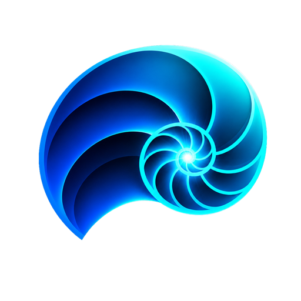
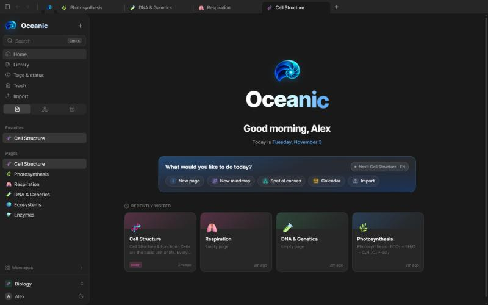
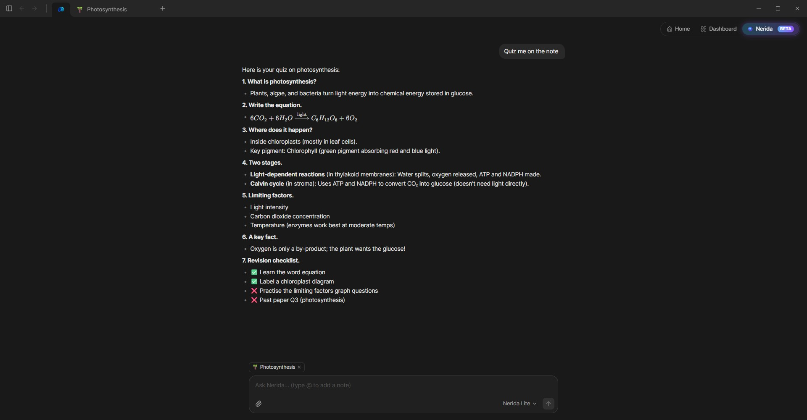

Home
Pick up where you left off. Recent pages, study tools and Nerida are one click away.

OceanicNotes, mindmaps, docs, sketches and PDFs in one free app. It works offline, and your notes never leave your PC.

Pick up where you left off. Recent pages, study tools and Nerida are one click away.
Write in blocks. Nest sub-pages, link notes together, and add tables, math and images.
Lay out a topic visually, then link each idea back to the note it came from.
See how all your notes connect, and label the links between topics.
Ask questions about your notes and turn them into study material, right beside your work.



Write essays in a Word-style editor and export to .docx or PDF.
Highlight, underline, draw and add sticky notes. Quote a page into your notes.
Review with spaced repetition, or set yourself a test.
Plan sessions and see what's due.
Fix typos without sending text anywhere.
Nerida is Oceanic's AI. It runs on your PC through llama.cpp, so it can read your notes without sending them anywhere.
Down here it's dark and quiet. So is Oceanic. Your notes stay on your PC.
Yes. Download it and use everything, with no account.
No. Notes are stored on your PC and Nerida runs there too. A cloud provider is only used if you add one and agree to it.
Windows, macOS and Linux. Mobile versions are planned.
Nerida is made for everyday laptops. Answers come faster on stronger hardware.
Oceanic updates itself when a new version is out.
Start with a single note. Everything else is waiting a click away.
Download OceanicLoading recent releases…